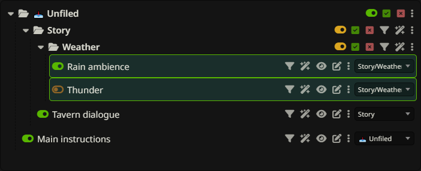
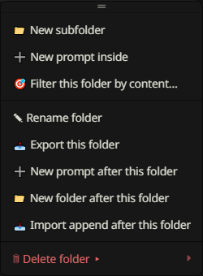

Folders & ordering
Build nested folders, control intended prompt states, and arrange the actual prompt order with drag and drop.
Create, nest, rename & collapse

Use toolbar Folder for a top-level folder. A folder’s ⋮ menu provides New subfolder, New prompt inside, and sibling creation with New folder after this folder or New prompt after this folder. A prompt’s ⋮ menu also offers New folder after this and New prompt after this.
Rename a folder by double-clicking its name or choosing Rename folder from its menu. The collapse arrow hides or shows descendants without changing their enabled state. Unfiled is the fixed root for prompts without a folder; it cannot be renamed or moved like an ordinary folder.
Master mute & restore

A folder’s master toggle temporarily disables its contents in the native list while preserving individual intended on/off states shown in the tree. Toggle the folder back on to apply those intended states. A child folder can remain independently muted when its parent is restored.
Changing a prompt’s intended toggle inside a muted folder records what should happen when the ancestor is unmuted; it does not bypass that mute. This is useful for preparing a scene without immediately enabling all its prompts.
Enable ALL & Disable ALL
The square-check and square-X controls beside a folder’s master toggle force every prompt in that folder and its subfolders on or off. These actions replace the individual states instead of preserving a mixture. They clear overlapping saved master-mute state so the force action can take effect.
Use the master toggle when you want to pause and later restore a group. Use Enable ALL or Disable ALL when you want a new uniform state. They act on the subtree, not only rows currently visible after collapsing or searching.
Read mixed & suppressed states
A folder aggregates the intended states of its descendants. The normal on/off indicator shows a uniform state; a mixed indicator means some prompts are on and others off. A suppressed indicator means the folder has intended enabled content but an ancestor is muting it. An empty folder has no active contents to toggle.
Hover the control to read its explanation; colors depend on the theme. Distinguish these intended states from the native enabled count in the panel status and from the prompts included in Preview.
Move & reorder with drag and drop

Use a prompt’s move selector to choose an existing folder, Unfiled, or New folder. To control placement as well as membership, drag rows. On a folder, dropping in its middle moves inside it; dropping at its top or bottom inserts before or after it. Prompt rows offer before/after insertion. Dropping on Unfiled moves to the root.
Dragging a folder carries its descendants. Moving a folder into itself or a descendant is rejected. The tree is flattened from top to bottom and synchronized to native Prompt Manager order, including before sending, so ordering can affect generation.
Move several items together


Hold Ctrl (Windows/Linux) or Cmd (macOS) and click empty space on prompt or folder rows to add or remove selections. Drag a selected row to move the selection together in visible tree order. A selected folder already includes its descendants, so selecting both does not duplicate them.
Selection remains after a drop so you can correct placement. Plain-click empty row space or tree background to clear it. Buttons, toggles and selectors retain their own individual actions; multi-selection is for moving items.
Protect prompts from filters
Each prompt and ordinary folder has two independent exclusion controls: the funnel excludes it from manual Filter and Filter presets; the wand excludes it from Auto Filter. A folder exclusion is inherited by descendants. Click again to include it.
Exclusion keeps a prompt out of that matching/target-selection workflow. It does not make it immune to a parent folder’s master mute, a force-all action, or direct manual toggling. If a matching sibling causes a containing folder to be muted, excluded descendants are still suppressed by that folder.
Folder menu, export & deletion


A folder’s ⋮ menu also provides Filter this folder by content…, Export this folder, Import append after this folder, and deletion choices. Despite the filter label, its dialog supports tags as well as content. Scoped matching starts from that folder’s subtree.
Delete folder only removes that folder and its subfolders while moving their prompts up one level. The other choices remove contained prompts from the active list, or permanently delete them. See scoped imports and deletion semantics.